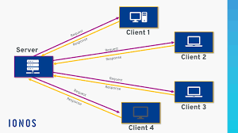

A web server is a computer system that stores, processes, and delivers web pages to users.
A web server is a system that stores website files and delivers them to users when requested. When a browser sends an HTTP request, the web server processes it and sends back the requested files such as HTML pages, images, and scripts.
Web servers are important because they store and deliver all website content to users. Without web servers, websites would not be accessible on the internet. They ensure that web pages are available 24/7.